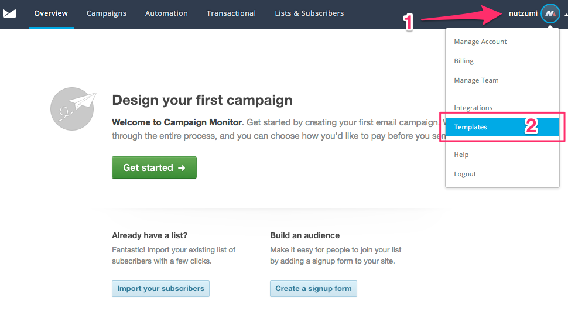
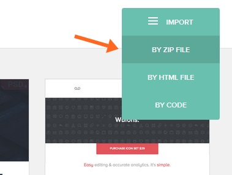

Thank you for purchasing my theme. If you have any questions that are beyond the scope of this help file, please feel free to email via my user page contact form here. Thanks so much!
Select "Template" (2)

Select "import" (3)
Fill in a Template name(4)
Browse to the index.html file of your prefer template (5)
Browse to the zip image folder create from the same template folder (6)
*if you want to modify for future use. just click edit button at the template. so you can edit code and some design. However, I suggest to edit in html text editor such as Dreamweaver for more text editor functions (find and replace all, etc.) and then save, make a zip file , and import as a new template. Code are aleady commented easy to copy / delete / replace.
Select your prefer template from MyMail folder.
After you login to Stampready at your dashboard please click a "New Campaign" button on the top right corner or at the side menu Campaigns > New Campaign
Select import by zip file at the top right menu browse to the zip file

Done! more info about how to use Template builder click here
please note, any question regarding about Template builder please send to help@stampready.net,
I've used the following images, icons or other files as listed.
Once again, thank you so much for purchasing this theme. As I said at the beginning, I'd be glad to help you if you have any questions relating to this theme. No guarantees, but I'll do my best to assist. If you have a more general question relating to the themes on ThemeForest, you might consider visiting the forums and asking your question in the "Item Discussion" section.
nutzumi
Q : In MailChimp when I edit text or image the below module are disappear, why?
A : Make sure you edit your template in the sending step not in My template menu. You may notice that repeatable are not working too. what course the problem was mc:repeatable tag. if remove this tag we can edit template normally. However, keeping repeatable function are better. so I suggest to edit in Design step after create a new Campaign instate. These will make you able to edit and repeatable module normally.
Q : How import to mymail plugin for wordpress?
A : Create a zip file from your prefer color scheme folder include img folder, index.html, notification.html. Navigate to upload tab in my mail (next to select theme tab) browse to your zip file and click upload button.
* please note envato are not allow to manage file package via zip with in a zip file. that why I can't make a zip file ready to upload for you. sorry for inconvenience.
Q : Can I still edit content after exporting from StampReady?
A : Yes, you can edit content add/remove modules normally but only All-in-one template that a repeatable function not available.
Q : Why I background image is not visible in Outlook?
A : Sorry, Outlook is not support background-image since version 2007 acording to this Email CSS Guide. it will show a solid background color instate.
Q : Can I export html file from StampReady.net and import to use in MailChimp?
A : Yes, you can. after you modify template in StampReady builder's (change bg image, change template colors) and then export html files. Make sure you select an option that include img folder with in the zip file. then after import to MailChimp you need to manually add *|UNSUB|* for unsubscribe link and *|ARCHIVE|* to the text.
Q : After I create a new campaign in MailChimp it only appear header and footer. where's other modules?
A : Please try, hover at the header module or any module that already showing now , The reapeatable function will appear. You can click at + sign to add more modules and switch to other at select dropdown menu.